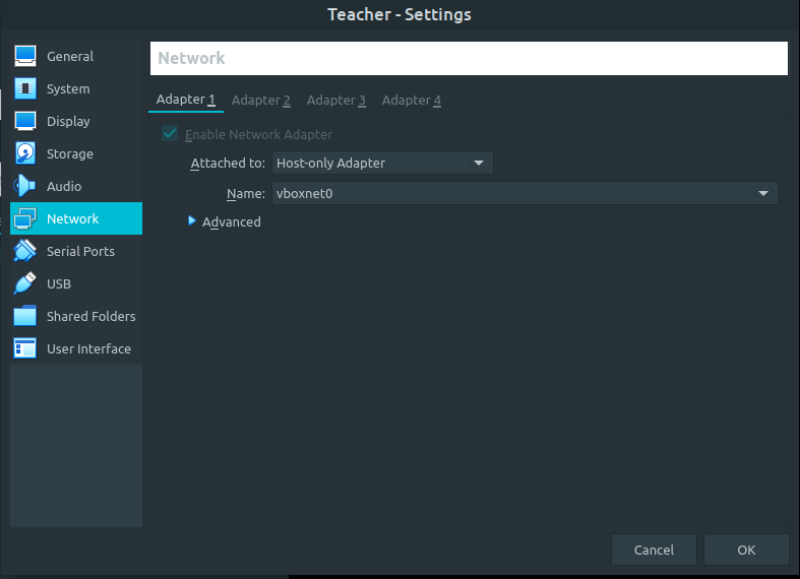
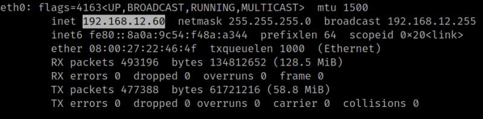
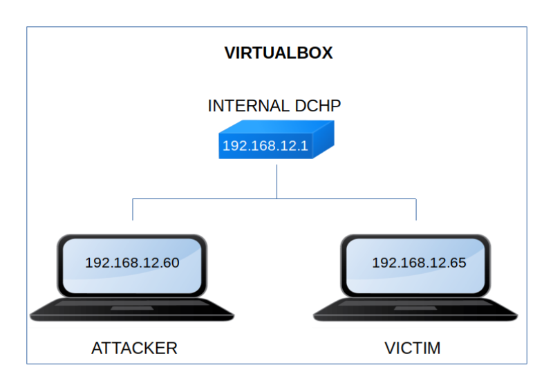

Teacher
▸ Teacher
▸ 2. Finding Services and Ports
Difficulty: Low.
Flag: 2 flags.
Learning:
• Reconnaissance
Scan Network
Find services
• Enumerate
Gobuster
Steganography
Fuzzing
• Exploitation
Payload in URL
Get user
• Privilege Escalation
See sudoers
xauth
• Download (Mirror): https://downloads.hackmyvm.eu/teacher.zip
Install the machine on VirtualBox:
1. Download the file and extract it.
2. On Virtualbox choose File->Import Appliance.
3. Select the file “ova”.
4. Accept to import.


Watch your Machine IP.
$ ifconfigOutput:

Diagram
